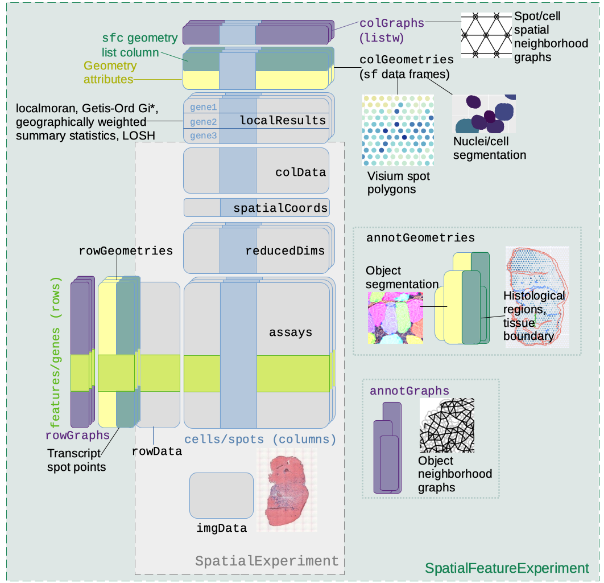
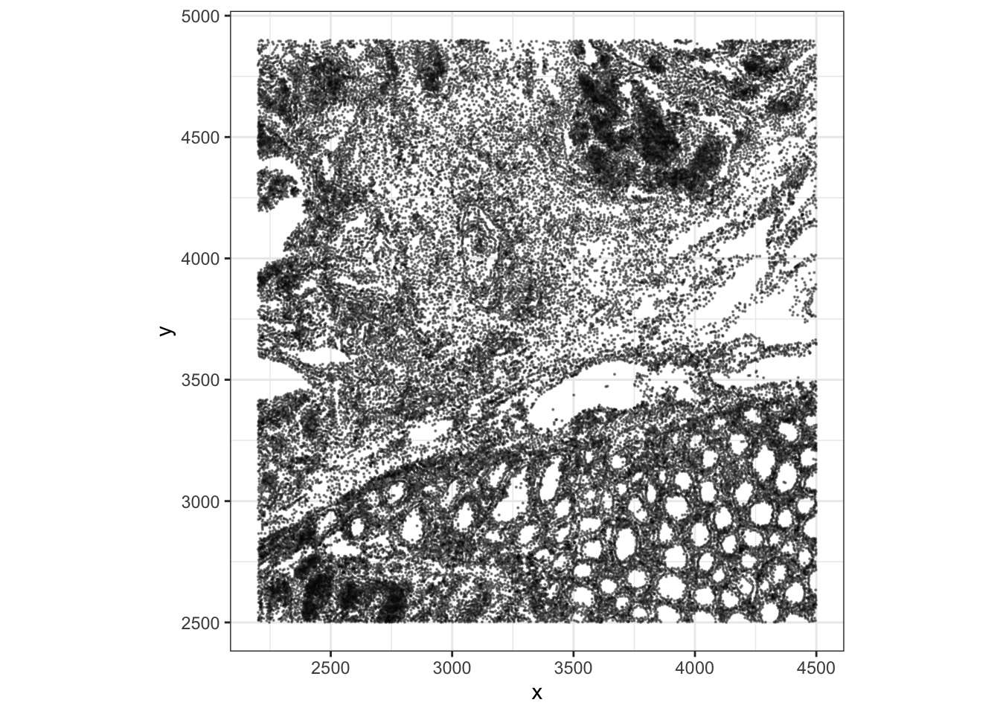
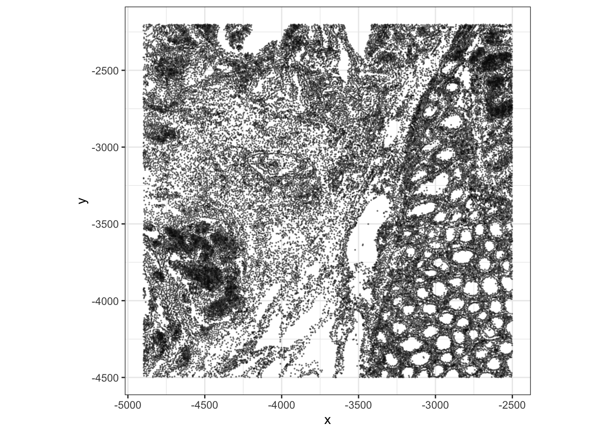
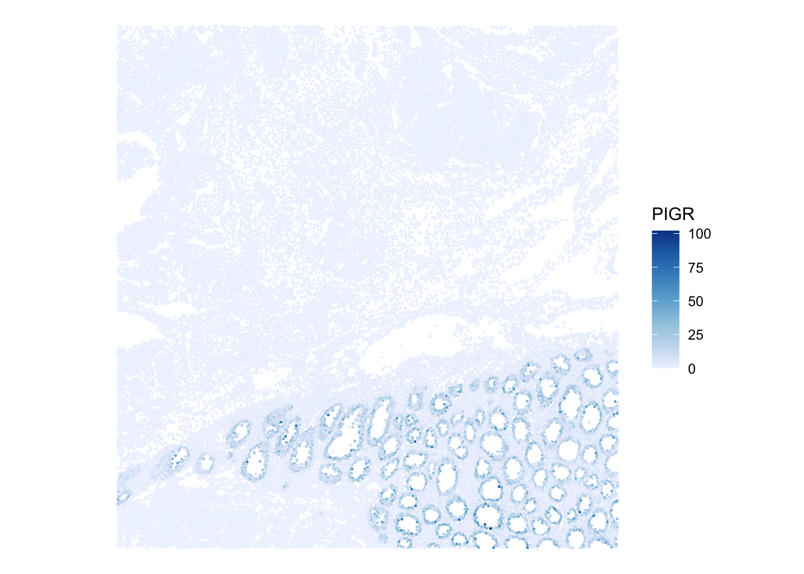
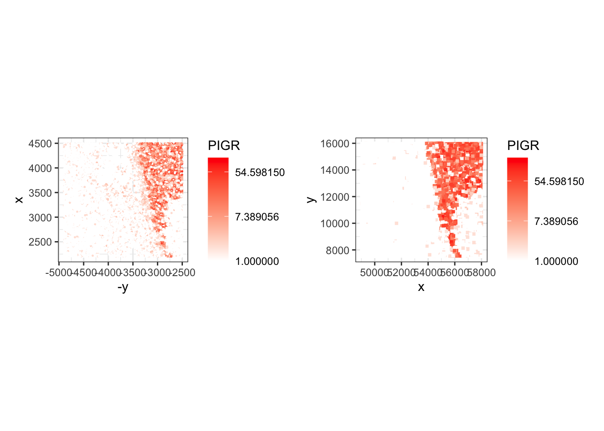
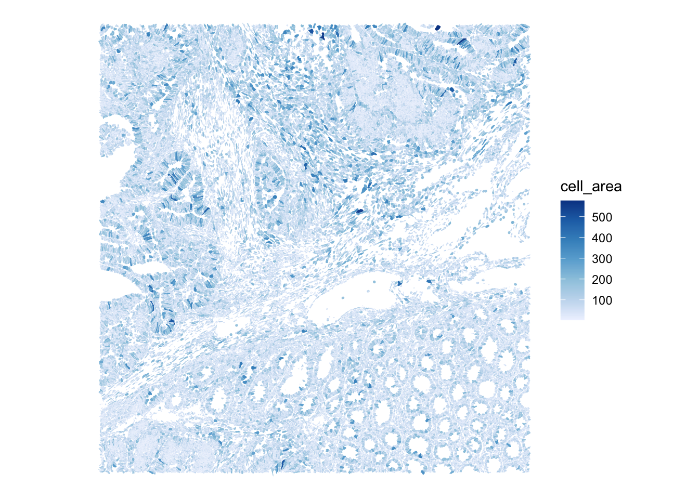
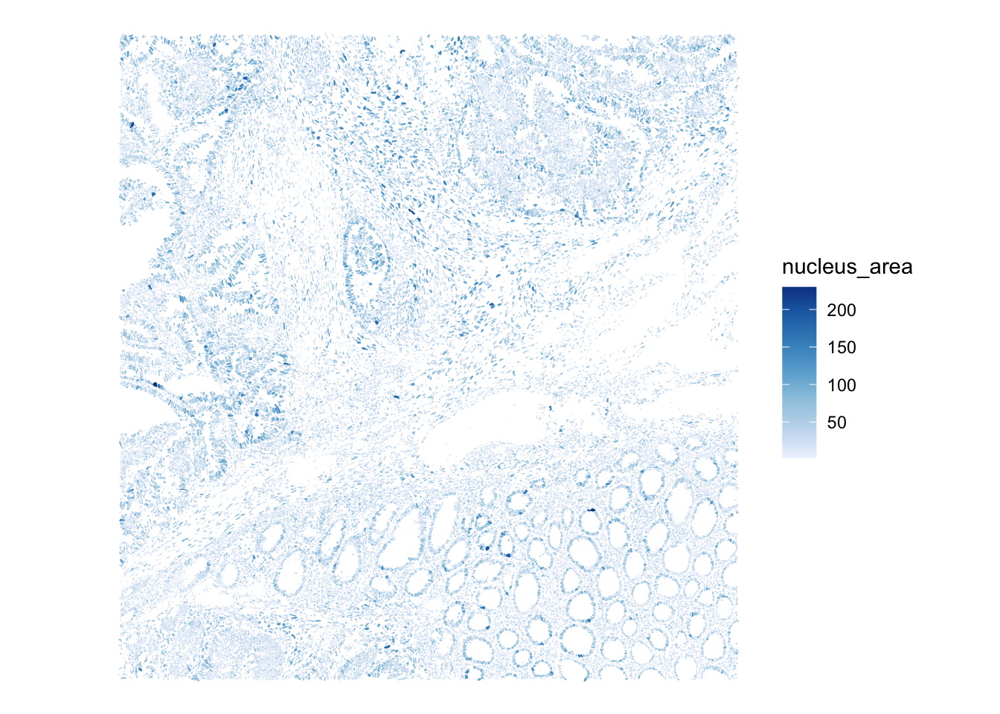

library(SpatialFeatureExperiment)
library(SpatialExperiment)
library(Voyager)
library(ggplot2)
library(patchwork)
library(scuttle)
library(sfarrow)
library(HDF5Array)Exercise 1B: SpatialFeatureExperiment - Xenium
Learning Objectives
By the end of this exercise, you will be able to:
- Understand the structure of a
SpatialFeatureExperimentobject. - Explain when
SpatialFeatureExperimentis useful compared withSpatialExperiment. - Access cell-level metadata and spatial coordinates from Xenium data.
- Inspect geometry information such as cell or nucleus boundaries.
- Compare the Xenium representation with the Visium HD representation from Exercise 1A.
Libraries
Input data
Next, will work with the 10X Xenium dataset from the P2 sample (human colorectal cancer study by Oliveira et al).
This slide is a serial section of the sample used in Exercise 1A, so the two datasets are biologically related but not the exact same physical tissue section.
Imaging-based spatial transcriptomics platforms detect a targeted panel of a few hundred to a few thousand genes in situ at subcellular resolution, decoding each transcript over multiple rounds of imaging and assigning it to a segmented cell.
The full Xenium output is very large and includes cell boundaries, nucleus boundaries, transcript locations, morphology images, and expression matrices. For this exercise, for practical reasons we use a region of interest, selected to approximately match the region of interest used in Exercise 1A, and only include some of the layers in the imported compact course folder. This makes the two exercises comparable while avoiding a full image-registration workflow during the practical (but see this section from the OSTA book for some info on this process)
# Define the region of interest
roi_xenium <- c(
xmin = 2200,
xmax = 4500,
ymin = 2500,
ymax = 4900
)
roi_xeniumxmin xmax ymin ymax
2200 4500 2500 4900 We import the Xenium output with flip = "none" so the exercise uses the native Xenium coordinate orientation. We will see below that this differs from the coordinate system used by the Visium HD platform, which can be accounted for at the import stage, or later for when visualizing the data, which is what we chose to do for this practical. We import the compact Xenium output into a SpatialFeatureExperiment object:
# Import data into a SpatialFeatureExperiment object
sfe_full <- readXenium("data/Human_Colon_Cancer_P2/xenium/outs", flip = "none")
# Use unique Symbol for rownames
rownames(sfe_full) <- uniquifyFeatureNames(
ID = rowData(sfe_full)$ID,
names = rowData(sfe_full)$Symbol
)
dim(sfe_full)[1] 541 340837range(spatialCoords(sfe_full)[, 1])[1] 20.43621 6654.75537range(spatialCoords(sfe_full)[, 2])[1] 19.4094 7269.5786Then we subset it to the region of interest:
sfe <- sfe_full[, spatialCoords(sfe_full)[, 1] >= roi_xenium[["xmin"]] &
spatialCoords(sfe_full)[, 1] <= roi_xenium[["xmax"]] &
spatialCoords(sfe_full)[, 2] >= roi_xenium[["ymin"]] &
spatialCoords(sfe_full)[, 2] <= roi_xenium[["ymax"]]]
rm(sfe_full)
sfeclass: SpatialFeatureExperiment
dim: 541 52569
metadata(1): Samples
assays(1): counts
rownames(541): ABCC8 ACP5 ... UnassignedCodeword_0330
UnassignedCodeword_0338
rowData names(3): ID Symbol Type
colnames(52569): ablhnkec-1 ablhpkkh-1 ... oikdmkkf-1 oikeebja-1
colData names(9): transcript_counts control_probe_counts ...
nucleus_area sample_id
reducedDimNames(0):
mainExpName: NULL
altExpNames(0):
spatialCoords names(2) : x_centroid y_centroid
imgData names(0):
unit: micron
Geometries:
colGeometries: centroids (POINT), cellSeg (MULTIPOLYGON), nucSeg (MULTIPOLYGON)
Graphs:
sample01:
ImportantExercise 1
Why is an object of the SpatialFeatureExperiment class used to store Xenium data?
Which information could not be represented by a simple spot- or bin-level SpatialExperiment?
TipAnswer
Xenium is an image-based spatial transcriptomics technology. In addition to a count matrix and cell coordinates, it can provide cell boundaries, nucleus boundaries, transcript locations, and morphology images.
SpatialFeatureExperiment extends SpatialExperiment with geometry support, making it better suited to storing and manipulating these spatial shapes.
Exploring the object
SpatialFeatureExperiment extends SpatialExperiment, which extends SingleCellExperiment, so familiar accessors still apply:
dim(sfe)[1] 541 52569colData(sfe) |> head()DataFrame with 6 rows and 9 columns
transcript_counts control_probe_counts control_codeword_counts
<integer> <integer> <integer>
ablhnkec-1 116 0 0
ablhpkkh-1 120 0 0
ablicbjh-1 89 0 0
ablilfnl-1 81 0 0
ablineen-1 145 0 0
ablioegm-1 71 0 0
unassigned_codeword_counts deprecated_codeword_counts total_counts
<integer> <integer> <integer>
ablhnkec-1 0 0 116
ablhpkkh-1 0 0 120
ablicbjh-1 0 0 89
ablilfnl-1 0 0 81
ablineen-1 0 0 145
ablioegm-1 0 0 71
cell_area nucleus_area sample_id
<numeric> <numeric> <character>
ablhnkec-1 75.0045 26.3261 sample01
ablhpkkh-1 72.7467 19.6881 sample01
ablicbjh-1 58.7031 26.1003 sample01
ablilfnl-1 132.1723 NA sample01
ablineen-1 73.2434 28.7194 sample01
ablioegm-1 44.0273 30.9772 sample01rowData(sfe) |> head()DataFrame with 6 rows and 3 columns
ID Symbol Type
<character> <character> <character>
ABCC8 ENSG00000006071 ABCC8 Gene Expression
ACP5 ENSG00000102575 ACP5 Gene Expression
ACTA2 ENSG00000107796 ACTA2 Gene Expression
ADH1C ENSG00000248144 ADH1C Gene Expression
ADRA2A ENSG00000150594 ADRA2A Gene Expression
AFAP1L2 ENSG00000169129 AFAP1L2 Gene ExpressionspatialCoords(sfe) |> head() x_centroid y_centroid
ablhnkec-1 3422.334 2507.607
ablhpkkh-1 3416.419 2512.555
ablicbjh-1 3428.145 2502.129
ablilfnl-1 3437.918 2514.156
ablineen-1 3430.172 2518.024
ablioegm-1 3447.884 2615.741
SpatialFeatureExperiment class structureNote: The practical Exercise 1C uses the segmented output of the Visium HD dataset used in Exercise 1A, which will also be stored into a SpatialFeatureExperiment object.
ImportantExercise 2
Check the dimensions and metadata of the sfe object.
Questions:
- What do the columns represent?
- What do the rows represent?
- What differs compared to the Visium HD
speobject inExercise 1A? - What is stored in the main assay?
TipAnswer
In this object, columns represent segmented cells, while rows represent genes. This differs from the Visium HD slide stored in a SpatialExperiment object, where columns represent spatial bins rather than segmented cells.
ncol(sfe)[1] 52569nrow(sfe)[1] 541We notice that the number of features is small (541) as the Xenium technology measures a targeted panel rather than the whole transcriptome.
assay(sfe)<541 x 52569> sparse DelayedMatrix object of type "integer":
ablhnkec-1 ablhpkkh-1 ablicbjh-1 ... oikdllpb-1
ABCC8 0 0 0 . 0
ACP5 0 0 1 . 0
ACTA2 1 0 0 . 0
ADH1C 0 0 0 . 0
ADRA2A 0 0 0 . 0
... . . . . .
UnassignedCodeword_0289 0 0 0 . 0
UnassignedCodeword_0292 0 0 0 . 0
UnassignedCodeword_0298 0 0 0 . 0
UnassignedCodeword_0330 0 0 0 . 0
UnassignedCodeword_0338 0 0 0 . 0
oikdmkkf-1 oikeebja-1
ABCC8 0 0
ACP5 0 0
ACTA2 0 0
ADH1C 0 0
ADRA2A 0 0
... . .
UnassignedCodeword_0289 0 0
UnassignedCodeword_0292 0 0
UnassignedCodeword_0298 0 0
UnassignedCodeword_0330 0 0
UnassignedCodeword_0338 0 0The count matrix indicates the number of observed molecules for each of the 541 genes in each cell. This matrix is analogous to a UMI counts matrix in the Visium HD dataset.
Inspecting geometries
In addition to the slots from the SpatialExperiment object, one of the key features of SpatialFeatureExperiment is that it can store geometries associated with cells or features.
colGeometries(sfe)List of length 3
names(3): centroids cellSeg nucSeg
ImportantExercise 3
Inspect the available column geometries in the Xenium object. To which biological structures do they correspond to? In which class are stored these objects?
TipAnswer
The available geometries include cell centroids, cell boundaries, and nucleus boundaries. These are commonly available for imaging-based spatial transcriptomics technologies, but the exact names depend on the reader functions and packages used to import the data.
colGeometries(sfe)[["centroids"]]Simple feature collection with 52569 features and 0 fields
Geometry type: POINT
Dimension: XY
Bounding box: xmin: 2200.037 ymin: 2500.096 xmax: 4499.985 ymax: 4899.936
CRS: NA
First 10 features:
geometry
1 POINT (3422.334 2507.607)
2 POINT (3416.419 2512.555)
3 POINT (3428.145 2502.129)
4 POINT (3437.918 2514.156)
5 POINT (3430.172 2518.024)
6 POINT (3447.884 2615.741)
7 POINT (3458.518 2625.128)
8 POINT (3452.199 2632.097)
9 POINT (3453.355 2612.359)
10 POINT (3453.873 2623.217)The geometries are stored using “Simple Features” objects, which allow to encode spatial data and can be easily manipulated with the sf package
Visualizing Xenium cells
We can start with a simple scatterplot of the cells in the selected region of interest:
xy <- as.data.frame(spatialCoords(sfe))
names(xy)[1:2] <- c("x", "y")
ggplot(xy, aes(x = x, y = y)) +
geom_point(size = 0.08, alpha = 0.4) +
coord_fixed() +
theme_bw() +
labs(x = "x", y = "y")
ImportantExercise 4
Compare this point-based visualization with the Visium HD plot from Exercise 1A. - What do you notice regarding the coordinates ? - What does one point represent in each dataset?
TipAnswer
The coordinate system differences between Visium HD and Xenium results in flipped image. It’s possible to simply correct this at the plotting step:
ggplot(xy, aes(x = -y, y = -x)) +
geom_point(size = 0.08, alpha = 0.4) +
coord_fixed() +
theme_bw() +
labs(x = "x", y = "y")
In the Visium HD exercise, each point or square represents a 16 um spatial bin. In the Xenium exercise, each point represents a segmented cell centroid. This is one of the key conceptual differences between binned sequencing-based spatial data and image-based cell-resolved spatial data.
We can also visualize expression for a marker gene. For example, PIGR is present in the Xenium panel and shows a clear spatial pattern in this region. We renamed the rows to gene symbols after import, which is why we can refer to this marker as "PIGR" rather than by its Ensembl ID. At this stage we plot the number of molecules since log-normalized counts will be introduced later in the course. The plotSpatialFeature() function from the Voyager package is handy:
plotSpatialFeature(sfe, "PIGR", exprs_values = "counts")
ImportantExercise 5
Choose another marker gene and visualize its spatial pattern.
How does the interpretation differ from plotting a gene on Visium HD bins? How does the expression of the same gene compares across platforms?
TipAnswer
The Xenium signal is measured over segmented cells, while the Visium HD binned signal aggregates molecules within fixed spatial bins. Xenium can therefore represent cell-level heterogeneity more directly, but it measures a targeted panel rather than the whole transcriptome.
Here is some code to plot the log of the molecule counts of the same gene across platforms in a comparable way:
xy <- data.frame(spatialCoords(sfe), colData(sfe), PIGR=counts(sfe)["PIGR",] + 1)
names(xy)[1:2] <- c("x", "y")
p_xen <- ggplot(xy, aes(x = -y, y = x, color=PIGR)) +
geom_point(size = 0.2) +
coord_fixed() +
scale_color_gradient(trans = "log", low = "white", high = "red") +
theme_bw()
## load the object from Exercise 1A
spe <- loadHDF5SummarizedExperiment(dir="results/day1/", prefix="01.1a_spe_")
xy <- data.frame(spatialCoords(spe), colData(spe), PIGR=counts(spe)["PIGR",] + 1)
names(xy)[1:2] <- c("x", "y")
p_vis <- ggplot(xy, aes(x = x, y = y, color=PIGR)) +
geom_point(size = 1, shape=15) +
coord_fixed() +
scale_color_gradient(trans = "log", low = "white", high = "red") +
theme_bw()
p_xen + p_vis
ImportantExercise 6
Use the plotSpatialFeature() function to visualize the cell segmentation mask, colored by cell area, and the nuclei segmentation mask, colored by nucleus area
TipAnswer
plotSpatialFeature(sfe,
colGeometryName="cellSeg",
features="cell_area") 
plotSpatialFeature(sfe,
colGeometryName="nucSeg",
features="nucleus_area") 
Save the object
In the Exercise 1A we used the function saveHDF5SummarizedExperiment because the count matrix of the SpatialExperiment object is stored on-disk for efficiency.
As you could see above, the SpatialFeatureExperiment includes additional layers, and some of them are also not loaded in memory. This complicates things further and even saving the object with the saveHDF5SummarizedExperiment function does not allow to fully re-import it.
A nice way to save the object is to use the alabaster.sfe package, implementing a (language agnostic) format to represent SpatialFeatureExperiment on disk (see the ArtifactDB project). See the package vignette here.
dir.create("results/day1", showWarnings = FALSE, recursive = TRUE)
alabaster.sfe::saveObject(sfe, "results/day1/01.1b_sfe_xenium")Clear your environment:
rm(list = ls())
gc()
.rs.restartR()
Important
Key Takeaways:
SpatialFeatureExperimentis useful for geometry-rich spatial data.- Xenium observations are cell-resolved, while the Visium HD object in Exercise 1A is bin-resolved.
- The P2 CRC subsets are designed to be comparable in course scope and approximate tissue region, not identical at cell level.